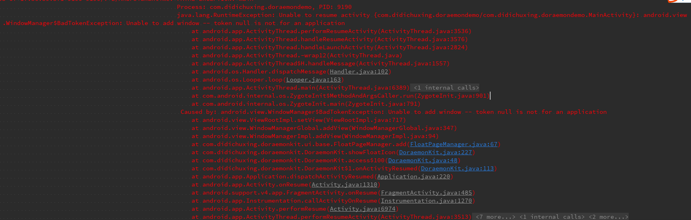
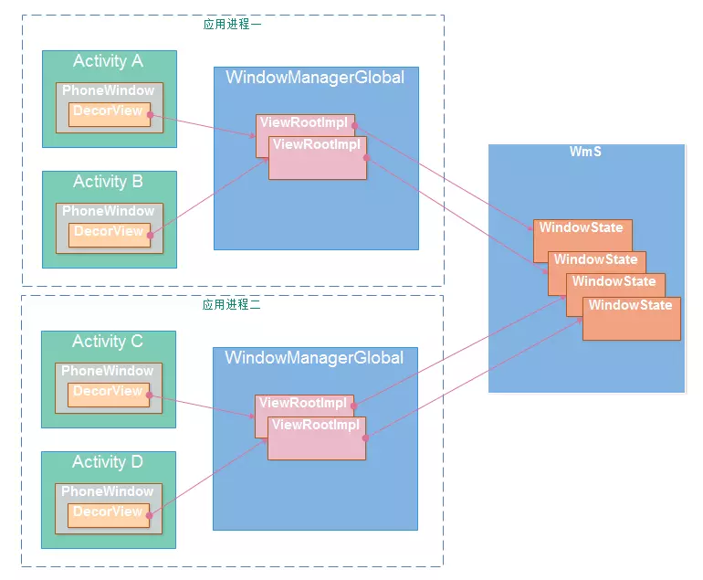
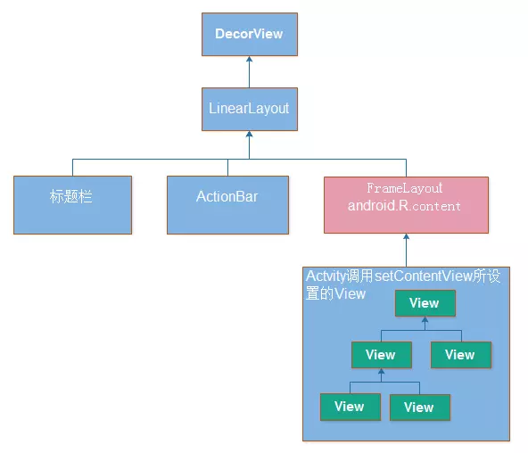

应用内悬浮可移动按钮，当第一个Activity出来之后我们进行悬浮控件的渲染，这个时候就需要知道Activity的生命周期，有人说知道MainActivity就好了，但是有锅，原因是此时虽然知道是第一个activity，但是在MainActivity中写代码会跟着MainActivity的生命周期走。所以得另寻僻径。
注册生命周期回调
1 2 3 4 5 6 7 public class App extends Application @Override public void onCreate () super .onCreate(); DoraemonKit.install(this ); } }
1 2 3 4 5 6 7 8 public static void install (App app) if (sHasInit) { return ; } sHasInit = true ; app.registerActivityLifecycleCallbacks(mAbsActivityLifecycleCallbacks); ...... }
所以mAbsActivityLifecycleCallbacks他就是核心，我们通过注册回调的方式，这个时候就能知道当前App进程里面所有Activity的生命周期的情况。
1 2 3 public abstract class AbsActivityLifecycleCallbacks implements Application .ActivityLifecycleCallbacks .... }
在想一个问题，我们在对应的生命周期中干什么？
1 2 3 4 5 6 7 8 9 10 11 12 13 14 15 16 17 18 19 private static AbsActivityLifecycleCallbacks mAbsActivityLifecycleCallbacks = new AbsActivityLifecycleCallbacks() { @Override public void onActivityStarted (Activity activity) } @Override public void onActivityResumed (Activity activity) } @Override public void onActivityPaused (Activity activity) } @Override public void onActivityStopped (Activity activity) } };
检查权限这里就不说了，我们设计下如何显示，我们都知道显示是跟我们的WindowManagerService直接相关的，所以我们同样的道理，由于不能直接使用Activity中的类，所以我们就使用WindowManager进行window的操作。使用很简单就是：
1 2 WindowManager extends ViewManager: public void addView (View view, ViewGroup.LayoutParams params)
所以我们就需要有一个类对应每一个界面的基类，这个类包含的操作是提供View，和params，如果需要操作，还需要提供事件的点击等等。于是就有了如下类：
1 2 3 4 5 6 7 8 9 10 11 12 13 14 15 16 17 18 19 20 21 22 23 24 25 26 27 28 29 30 31 32 33 34 35 36 37 38 39 40 41 42 public abstract class BaseFloatPage private WindowManager.LayoutParams mLayoutParams; public void performCreate (Context context) onCreate(context); mRootView = new FrameLayout(context) { @Override public boolean dispatchKeyEvent (KeyEvent event) if (event.getAction() == KeyEvent.ACTION_UP) { if (event.getKeyCode() == KeyEvent.KEYCODE_BACK || event.getKeyCode() == KeyEvent.KEYCODE_HOME) { return onBackPressed(); } } return super .dispatchKeyEvent(event); } }; View view = onCreateView(context, (ViewGroup) mRootView); ((ViewGroup) mRootView).addView(view); onViewCreated(mRootView); mLayoutParams = new WindowManager.LayoutParams(); if (Build.VERSION.SDK_INT >= Build.VERSION_CODES.O) { mLayoutParams.type = WindowManager.LayoutParams.TYPE_APPLICATION_OVERLAY; } else { mLayoutParams.type = WindowManager.LayoutParams.TYPE_PHONE; } mLayoutParams.format = PixelFormat.TRANSPARENT; mLayoutParams.gravity = Gravity.LEFT | Gravity.TOP; onLayoutParamsCreated(mLayoutParams); IntentFilter intentFilter = new IntentFilter(Intent.ACTION_CLOSE_SYSTEM_DIALOGS); context.registerReceiver(mInnerReceiver, intentFilter); } }
上面这个代码就搭建好了最初的核心基础类，然后每一个页面只需要实现该类，然后制定出自己的布局即可。
这里的第五步如果没有这段代码，则会报出如下异常：
1 java.lang.RuntimeException: Unable to resume activity {com.didichuxing.doraemondemo/com.didichuxing.doraemondemo.MainActivity}: android.view.WindowManager$BadTokenException: Unable to add window -- token null is not for an application

发生一个BadTokenException的异常，不能添加Window，我们针对这个异常研究下为什么。那我们就追踪源码：
ViewRootImpl.java
1 2 3 4 5 6 7 8 9 10 11 12 13 14 15 16 17 18 19 20 21 22 23 24 25 26 27 28 29 public void setView (View view, WindowManager.LayoutParams attrs, View panelParentView) synchronized (this ) { try { ... res = mWindowSession.addToDisplay(mWindow, mSeq, mWindowAttributes, getHostVisibility(), mDisplay.getDisplayId(), mAttachInfo.mContentInsets, mAttachInfo.mStableInsets, mAttachInfo.mOutsets, mInputChannel); } catch (RemoteException e) { ... } finally { if (restore) { attrs.restore(); } } if (res < WindowManagerGlobal.ADD_OKAY) { switch (res) { ... case WindowManagerGlobal.ADD_NOT_APP_TOKEN: throw new WindowManager.BadTokenException( "Unable to add window -- token " + attrs.token + " is not for an application" ); ... throw new RuntimeException( "Unable to add window -- unknown error code " + res); } } }
所以就清晰的可以看到是在mWindowSession.addToDisplay中发生的，我们继续追踪错误，下面这段代码发生在
1 2 3 4 5 6 7 8 9 10 11 12 13 14 15 public int addWindow (Session session, IWindow client, int seq, WindowManager.LayoutParams attrs, int viewVisibility, int displayId, Rect outContentInsets, Rect outStableInsets, Rect outOutsets, InputChannel outInputChannel) ...... WindowToken token = displayContent.getWindowToken( hasParent ? parentWindow.mAttrs.token : attrs.token); atoken = token.asAppWindowToken(); if (atoken == null ) { Slog.w(TAG_WM, "Attempted to add window with non-application token " + token + ". Aborting." ); return WindowManagerGlobal.ADD_NOT_APP_TOKEN; } ...... }
所以可以看出来token不能为空。先明白几个概念
Window :
定义窗口样式和行为的抽象基类，用于作为顶层的view加到WindowManager中，其实现类是PhoneWindow。
每个Window都需要指定一个Type（应用窗口、子窗口、系统窗口）。Activity对应的窗口是应用窗口；PopupWindow，ContextMenu，OptionMenu是常用的子窗口；像Toast和系统警告提示框（如ANR）就是系窗口，还有很多应用的悬浮框也属于系统窗口类型
WindowManager ：
用来在应用与window之间的管理接口，管理窗口顺序，消息等。
WindowManagerService
简称Wms，WindowManagerService管理窗口的创建、更新和删除，显示顺序等，是WindowManager这个管理接品的真正的实现类。它运行在System_server进程，作为服务端，客户端（应用程序）通过IPC调用和它进行交互。
Token
这里提到的Token主是指窗口令牌（Window Token），是一种特殊的Binder令牌，Wms用它唯一标识系统中的一个窗口。


我想使用Token应该是为了安全问题，通过Token来验证WindowManager服务请求方是否是合法的。如果我们可以使用Application的Context，或者说Token可以不是Activity的Token，那么用户可能已经跳转到别的应用的Activity界面了，但我们却可以在别人的界面上弹出我们的Dialog，想想就觉得很危险。
设置的类型会和token有关，因为会依据类型去检查对应的Token是否匹配等。比如明显是个App的Token，但是设置了系统类型，此时Token就不匹配。